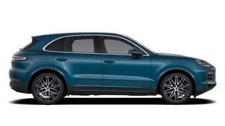
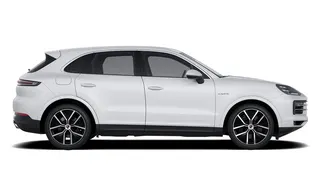
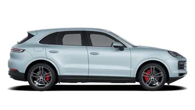
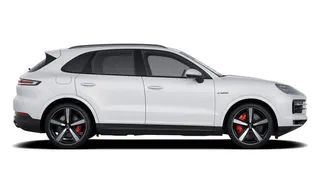
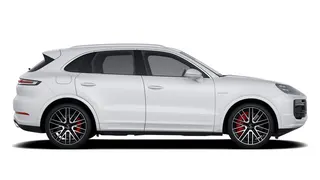
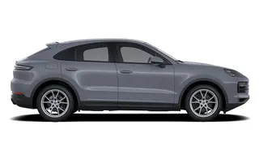

|
Cayenne Model |
|
U Cayenne modele spadaju:
| Cayenne |
Cayenne E-Hybrid |
Cayenne S |
|  |
 |
 |
| Cayenne S E-Hybrid |
Cayenne Turbo E-Hybrid |
Cayenne Coupe |
|  |
 |
 |
Prvi put predstavljen 2002. godine, Cayenne je bio prvi SUV u Porscheovoj gami vozila. Model je postao poznat po spoju sportske izvedbe i luksuzne udobnosti.
Cayenne je idealan izbor za ljude koji traže spoj luksuza i sportske vožnje u prostranom SUV-u, a model je ostao popularan među zaljubljenicima u performanse i sve one koji cene visokokvalitetnu izradu i inovativnu tehnologiju